山野草展でキンリョウヘンを見ました。
2025/05/04
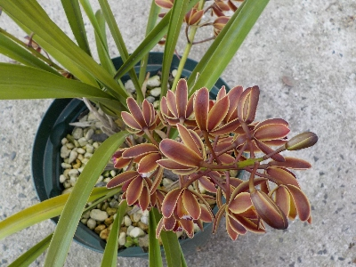
これは我が家のキンリョウヘンです。
同じ感じで山野草展のキンリョウヘンも開花中でした。ここらへんの地域は今が開花シーズンなんでしょうね。
私の管理が悪くて開花が遅いなんてことがないと思うとホッとしました。
いつもと同じでミツバチは近くを飛んでいません。
2025/05/04

これは我が家のキンリョウヘンです。
同じ感じで山野草展のキンリョウヘンも開花中でした。ここらへんの地域は今が開花シーズンなんでしょうね。
私の管理が悪くて開花が遅いなんてことがないと思うとホッとしました。
いつもと同じでミツバチは近くを飛んでいません。
2025/04/12
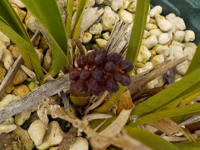
ブツブツが出てきました。去年よりだいぶ遅いです。これから開花まで時間がかかるので、ミツバチのお引越しには間に合わないかな。
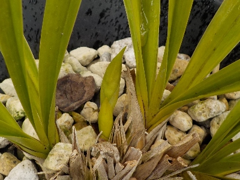
白いキンリョウヘンはまだブツブツになっていません。
今年は巣箱の前ではなく、玄関にキンリョウヘンを置いて鑑賞しようかな。
2024/05/15
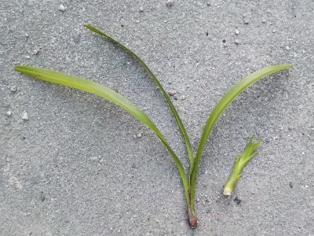
花が終わったのでキンリョウヘンの株分けをしました。
株分けの時に２つもげました。丁寧に扱ったんですけどね。
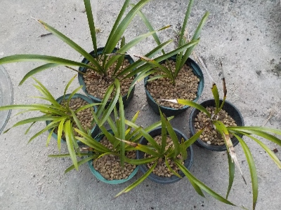
株が倍層して6株になりました。
1株の葉っぱが多いので、来年も株分けして倍増するかも。そうなるといいな。
2024/04/13
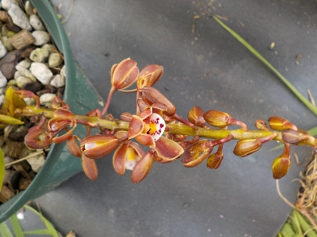
開花しましたけど、日本ミツバチは寄って来てはいません。
まあ、花が見れればいいかな。この赤いキンリョウヘンは花が2本あって、もう1本はツボミなので開花期間が長そうです。
2024/03/17
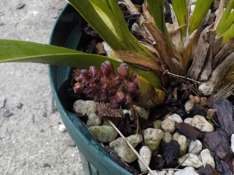
ゴツゴツしてて不格好な花芽ですね。
この状態から開花までしばらく時間がかかります。
のんびり待ちましょう。
2024/02/25
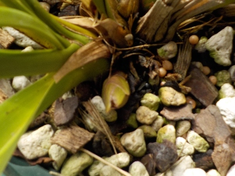
この小さいのは多分花芽。
今年も花が楽しめそうです。
ミツバチが来て欲しいとも思うんですが、来たら管理がいろいろあって面倒なので今年は来なくていいかな。
最近ちょっとやる気ないです。キンリョウヘンの株を増やすくらいが丁度いいです。
2024/02/18
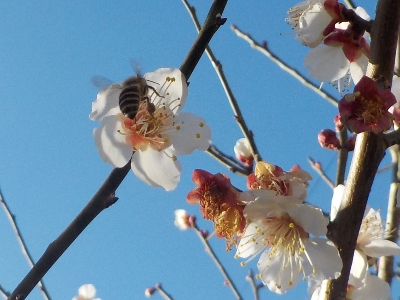
近くに巣があるみたいで、梅の花にミツバチが来ていました。
ひょっとしたら分蜂が来るかもしれない。
でもミツバチの面倒を見る自信はないな。
2023/10/01
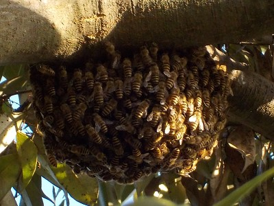
初めて蜂球を見ました。
これが巣の中に入ってくれたらと思いましたが、高い場所で危険なので捕獲は諦めました。
春になったら帰ってきて欲しいです。
2023/05/01
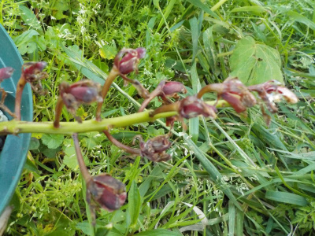
花が終わった感じですが、花びらが散らないんですね。
去年白いのが咲いた時は散った気がする。
種類が違うので違っていてもいいかな。
2023/04/27
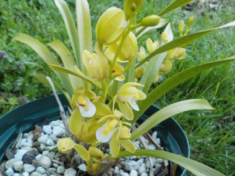
赤に続いて白が開花しました。
この鉢は花芽が2本あって、2本とも開花しました。
時期をずらして開花するのは理想的な感じです。
2023/04/19
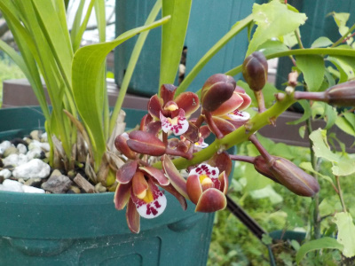
1匹くらいやってくればいいのにって思いますが、全然来ないですね。
あーつまらないなー。ミツバチの集団が見たいなー。
2023/04/17
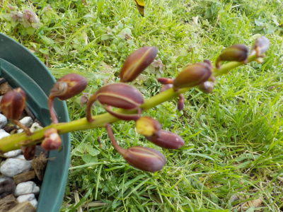
キンリョウヘンが咲きましたが、最近ミツバチを見ていません。
アブは沢山見ますが、ミツバチはいないみたい。
去年は網の袋で花を覆いましたが、今年は何もしないつもりです。
2023/03/19
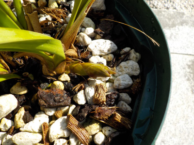
去年追加で増やしたキンリョウヘンに花芽がありました。
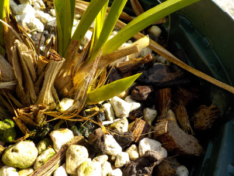
以前からあるキンリョウヘンにも花芽がありました。
家にあるキンリョウヘン3株全部で花が咲きそうです。ミツバチがやってくるのが楽しみです。
でも実際にミツバチやってきたらどうなるんだろう？困りそうな気がする。
2022/07/03
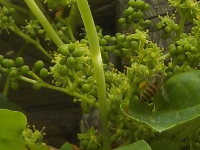
久しぶりにミツバチを見ました。
もうこの付近にミツバチはいないんじゃないかと考えていましたが、いて良かったです。
2022/05/14
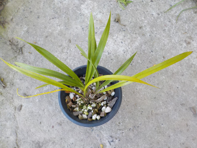
結局ミツバチがやって来ないうちにキンリョウヘンの花は散ってしまいました。
残念でした。
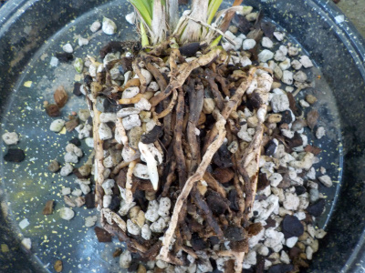
花が終わったので植替えです。
黒い根っこは取った方がいいらしいですが、面倒なのでそのままにしました。
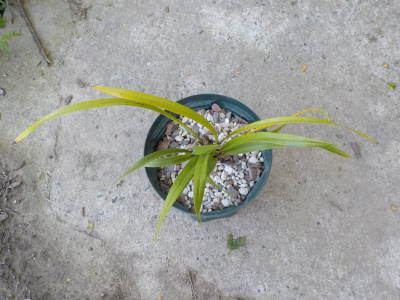
鉢のサイズを大きくしまた。大きく育って来年も花を咲かせて欲しいです。
2022/05/04
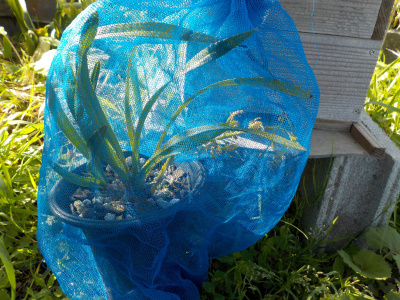
巣箱の近くにはミツバチはいません。ミツバチいないかなーとあちこち見ているんですが、最近見たことないです。
ちょっと前までは見てたんですけど、いなくなってしまったのかな？
キンリョウヘンは後何日咲いているのかな。
2022/04/27
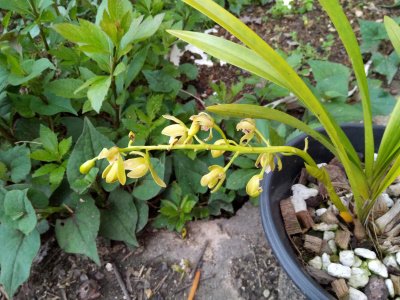
やっと開花しました。2年半育てての開花なのでうれしいです。今日は記念日です。
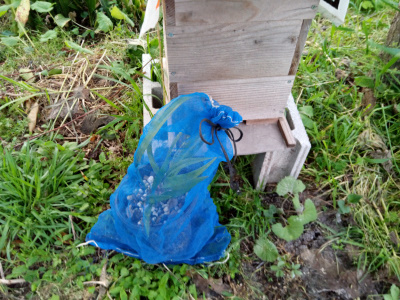
早速ネットに入れて巣箱の近くに置きました。よくあるキンリョウヘンの画像みたいに、凄い数のミツバチを見てみたいです。
でも今のところ1匹も寄ってきてはいません。大丈夫なのかな？
2022/04/23
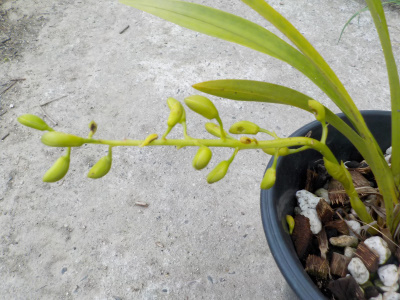
1週間で房が大きくなりました。
ネットでキンリョウヘンの花の画像を見たところ、これよりももっと大きい感じがするので、開花はまだ先かな。
後、色が全然付いていない。
2022/04/17
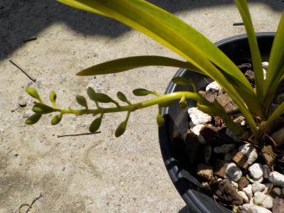
開花したときのために花に網をかぶせる練習をしたら、花がポロっと取れてしまいました。
勿体ない。
慎重に作業をしなければいけませんでした。開花までもう触りません。
2022/04/09
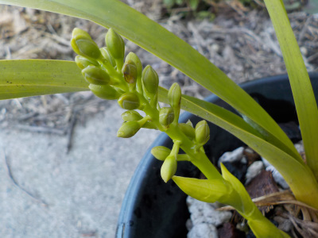
1週間前はツボミが塊になっていましたが、ぐんぐん成長してツボミが分かれました。
少し色も付いたので、もうちょっとで咲きそうな感じがします。
初めての開花でどうなるのか分からないので、こまめに観察しようと思っています。
2022/04/02
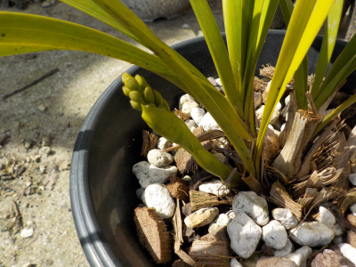
花芽はないと思っていましたが出てきました。
花芽は紫っぽいもので緑色は葉っぱだと何かで見たので、葉っぱだと思ってました。
開花は何日後かなー。ミツバチが沢山集まるところを見たいです。
2022/03/13
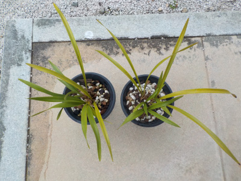
暖かくなってきたので、キンリョウヘンを外に出しました。
1月の写真と比べると、緑が多くなった気がします。
屋内が快適だったんでしょうね。
2022/01/23
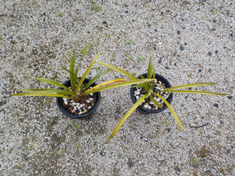
軒下のキンリョウヘンが黄色くなってきました。
寒いのか？日光に当たり過ぎなのかわかりませんが、屋内に入れることにしました。
出しっぱなしはダメみたいですね。来年からは1月なったら屋内に入れようと思います。
2021/11/21
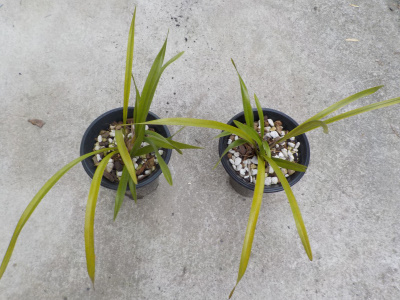
株分けしてから葉っぱが増えてますね。
確実に成長しているんですが、遅いな。この調子だと来年も花芽が付かない気がする。
育て方を勉強しようと思います。
2021/05/16
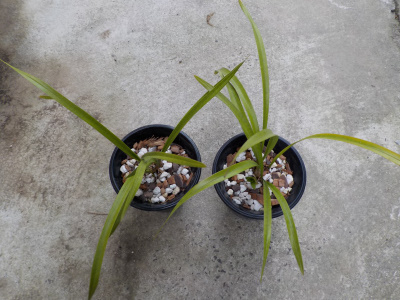
あんまり大きくなっていないキンリョウヘンですが、株分けの季節なので株分けしました。
鉢の数が2倍になったのは単純にうれしいです。
一つの株をブチブチちぎるのはちょっと抵抗がありました。こんなんしたら枯れるんじゃないみたいな。
無事に育ったら来年は株分けじゃなくて、鉢のサイズを大きくしようと思います。
2020/05/10
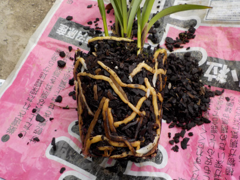
ポットから抜きました。
黒い根っこがありますね。水のやりすぎかな？
お店ではバークチップだけで育てているんですね。
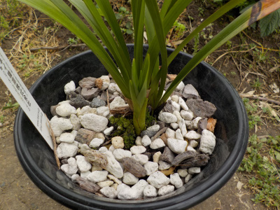
洋ラン用の培養土を買って入れました。
石ころだらけですね。
水はけがとっても良さそう。
2020/03/29
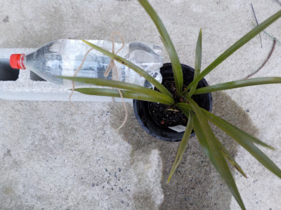
ネット調べだとキンリョウヘンは夏場は毎日水やりしましょうとか、1日2回水やりしましょうって情報があるんですが、毎日は無理だなと思っています。
水やりを簡単にする方法を考えて、ペットボトルから毛細管現象でちょっとずつ水を落とそうと実験中です。
3日くらい水が持つといいんですが、なかなかうまくいかないですね。
2020/03/29
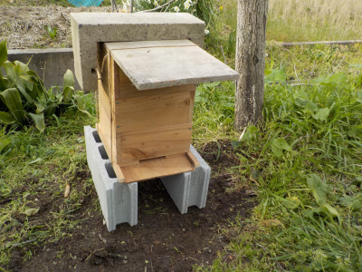
キンリョウヘンの花もないし誘引剤もないんですが、巣箱が作ってあるので設置しました。
家の屋根裏には何もしなくても引っ越してきたので、ひょっとしたらこの巣箱にも引っ越してくれるかもしれません。
期待して待ってた方が楽しいですよね。
2020/03/08
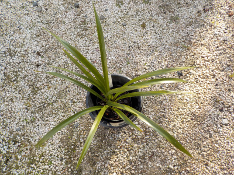
昨年購入したキンリョウヘンです。
まだ株が小さいので花は付きませんでした。
今バルブが3つあって、4つめが出そうな感じです。
あんまり過保護に育ててはいけませんと書かれた記事を読んだので、屋外の軒下で冬を越させました。水やりは週1回です。
無事に冬が越せて良かったです。
違う資料には冬は屋内に入れた方がいいって記事もあったので、来年は屋内にいれようと思います。今年は暖冬だったので、たまたま運が良く冬が越せたかもしれないです。
動画です。
キンリョウヘンってどれくらいのスピードで成長するんでしょうね。
今のところほぼ変化なしです。
注文してから1月以上経って到着です。
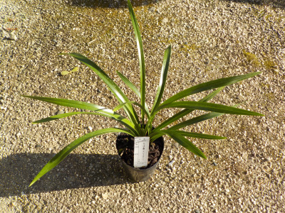
想像していたものより大きい苗が届きました。
春には株分けが出来るかも？
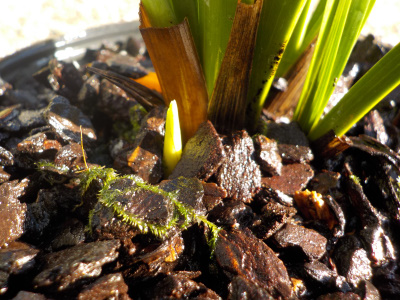
根元からは新しい芽がありました。これは花芽かな？
これが出たから商品が発送になったのかな？
注文する時に、花付きかどうかって確認していなかったのでどうなのか分かりません。
2019/10/09
ミツバチを寄せ付けるにはキンリョウヘンが効果的とあったので購入することにしました。
植物を育てるのは好きなので、1つ買ってドンドン増やすつもりです。
アマゾン、楽天、メルカリ等で販売していますが、値段の基準がよくわかりませんでした。
小さくて花がまだ咲かないものの値段が安いのは当然ですが、花が咲くサイズの値段がショップによって大きく違っています。
高いものの方が大きい気もしますが、大きさが書いてないものが多くなんか信用できません。
知らない店舗や個人から買うのは失敗しそうなので、キタイネットで注文することにしました。
キタイネットだと送料込で3056円（税込）です。3000円くらいだと安い部類ですね。
発送は後日なので、まだいつ来るかは分かりません。
どんなのが来るかな。